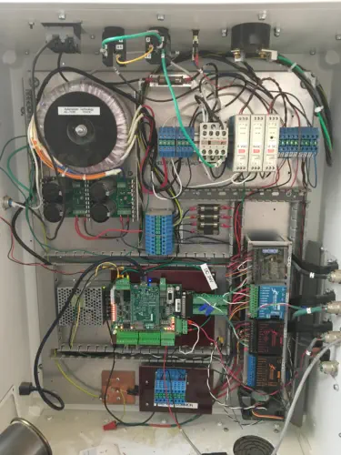

In 2015, I decided to build a CNC router for my shop. This was not my first machine build — I had previously constructed several shop machines using traditional woodworking and metalworking tools, including a combination wide-belt sander/planer and a pin router, using a South Bend lathe, metal cutoff saw, and drill press. One of my main goals was a machine capable of machining both wood and metal.
Frame and mechanical components
I started at my local surplus store and found a fabricated aluminum frame of TIG-welded I-beams defining the overall size: 36″ × 80″. eBay became my primary source for precision components. I purchased three ball screw assemblies with bearing blocks; only the blocks were used. The screws were replaced with Nook Industries XPR precision rolled ball screws, 5/8″ diameter with 0.200″ pitch — common in DIY CNC builds and excellent resolution. With my 67″ screw length, vibration became severe at 250 IPM; reducing maximum speed to 200 IPM eliminated it.
X-axis linear rails
The X-axis uses Thomson 1-1/4″ round linear motion rails under the aluminum frame — 48 precision holes. After about five hours of dial-indicator alignment, I achieved 0.002″ parallelism. I compromised bearing block spacing at 15″ instead of the full 36″ machine width to preserve travel.
Gantry design
The gantry is 4″ × 4″ structural steel tubing, 3/16″ wall. Top and bottom plates were milled at a machine shop; the Y-axis tube was Blanchard ground on all four sides ($200, well worth it). Four THK linear rails were butt-jointed on the Y-axis — not ideal, but they installed without issues.
Z-axis and spindle
I chose a metalworking spindle from Little Machine Shop with R8 collets, driven by a 1 HP Baldor DC motor and electronic speed controller — essential for machining steel. Belt tension uses a THK wide-body linear slide and surplus Acme screw on an aluminum sub-plate.
Spindle drive fix
Woodworking at up to 4,500 RPM was quiet and effective, but steel at ~800 RPM lacked torque when relying only on electronic speed reduction. A two-step pulley system from Little Machine Shop, with a matching aluminum motor pulley I machined, resolved the problem.
Cast iron table
Several years later I added a cast iron work surface at the end of the table for metal machining — machinist’s vise and a stable platform for heavy cuts.
Gantry rigidity
Sudden stops caused spindle shake traced to self-aligning Thomson round bearings on the X-axis. Standard (non-self-aligning) replacements from eBay ($29 each vs. $100 new) dramatically improved rigidity.
Ball screw replacement
I replaced a slightly bent original Nook screw with a new one and custom bearing blocks. HSS tooling on the South Bend lathe handled the hardened ends better than carbide; I single-pointed the threads with excellent results.
Electronics upgrade
I rebuilt the control box in a used industrial enclosure from eBay ($95) with panel-mount connectors, improved grounding, DIN-rail supplies, and snap-action limit switches. The finished box is 24″ × 30″ with a Plexiglas front panel — clean wiring and much better serviceability.

Final thoughts
Mechanical upgrades, bearing replacements, and electronics improvements transformed this into a machine I’m genuinely happy with — quiet, rigid, versatile, and capable of serious metal machining. Exactly what I set out to build in 2015.